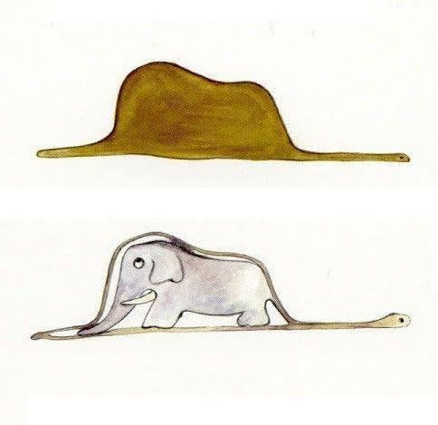

Cuando el narrador tenía seis años, vio en un libro la imagen de una serpiente boa que se tragaba a una fiera entera. Inspirado, hizo su primer dibujo: una boa que había devorado a un elefante.
Orgulloso, se lo mostró a las personas mayores y les preguntó si les daba miedo. Ellas respondieron: "¿Por qué habría de asustar un sombrero?". Nadie veía lo que realmente había dentro.
Entonces dibujó el interior de la boa, con el elefante adentro, para que los adultos pudieran entenderlo. Pero le aconsejaron dejar los dibujos y dedicarse a la geografía, la historia y las matemáticas.
Así, el niño abandonó su sueño de ser pintor y aprendió una lección que lo acompañaría toda la vida:
Página 1 de 3